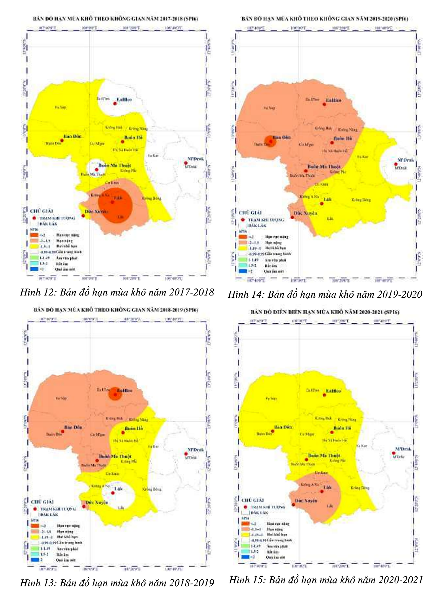
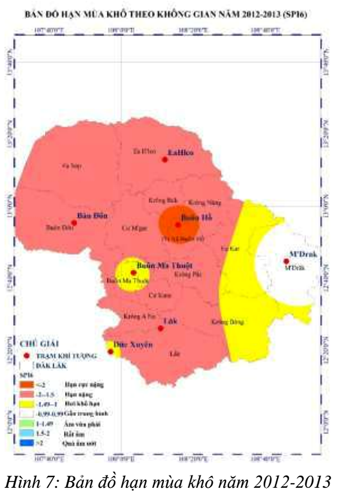
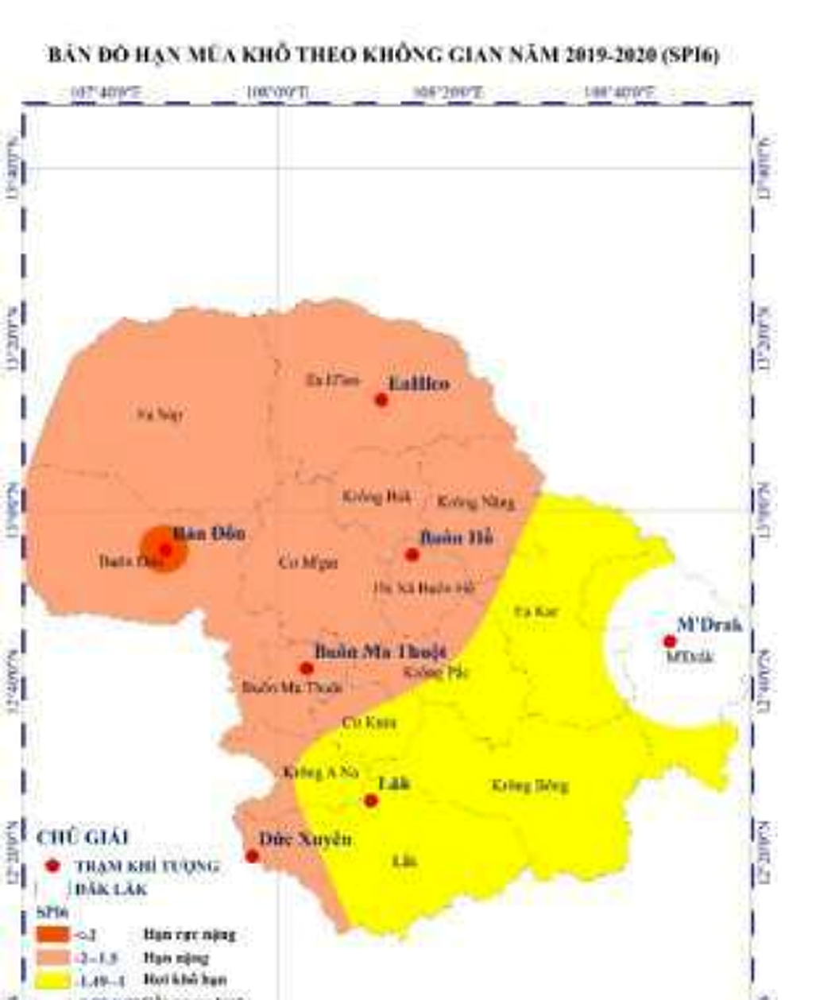

Lượng nước, độ ổn định, hiệu suất tưới, mực nước, nhu cầu nước và hiệu quả vật lý của công nghệ.
Nền tảng chuyển hóa bằng chứng nghiên cứu
Rủi ro nguồn nước và các tín hiệu kinh tế trong sản xuất cà phê tại Đắk Lắk
Một vấn đề tài nguyên nước được quan sát qua ba kênh kinh tế khác nhau: chi phí tưới hiện tại, mức sẵn lòng chi trả cho chương trình quản lý nước và tín hiệu ở giá trị đất do hộ tự ước tính.
Nền tảng không xây dựng chỉ số “rủi ro nước” tổng hợp và không thay thế số liệu thủy văn hoặc đánh giá kỹ thuật.
Phát hiện tích hợp
Không thấy tín hiệu rõ ở một kết quả kinh tế không đồng nghĩa với việc điều kiện nước không có ý nghĩa kinh tế ở kết quả khác.
217–218quan sát trong ba hợp phần
3kênh kinh tế được đối chiếu
262.619 đMức sẵn lòng chi trả trung vị / hộ / năm
−21,4%liên hệ giá trị đất trong mô hình khi thiếu nước tăng 1 bậc
Bằng chứng bổ sung, không thay thế
Bằng chứng thủy văn và bằng chứng kinh tế trả lời những khía cạnh bổ sung nhau của rủi ro nguồn nước
Gánh nặng chi phí, mức ủng hộ cho chương trình quản lý và tín hiệu được phản ánh trong đánh giá tài sản.
Vì sao cần ba hợp phần?
Ba kết quả kinh tế, ba loại thông tin khác nhau
Mục tiêu không phải “ghép ba phương pháp”, mà là xem một vấn đề nguồn nước có được phản ánh giống nhau qua các quyết định và kết quả kinh tế khác bản chất hay không.
Chi phí tưới
Gánh nặng chi tiêu hiện tại
Tổng chi phí tưới mà hộ khai báo trong niên vụ gần nhất, sau khi giữ một số đặc điểm sản xuất và điều kiện nước trong mô hình.
Không phải: hiệu quả sử dụng nước hoặc chi phí vòng đời của công nghệ tưới.
Mức sẵn lòng chi trả (WTP)
Ủng hộ được phát biểu cho một can thiệp cụ thể
Phản ứng của hộ trước một chương trình quản lý nước được mô tả rõ và một cơ chế đóng góp cố định hằng năm.
Không phải: giá nước, mức phí bắt buộc hoặc hành vi đóng góp thực tế.
Giá trị đất
Tín hiệu ở cấp tài sản sản xuất
Giá trị đất cà phê do hộ tự ước tính, nơi điều kiện nước có thể liên hệ với đánh giá tài sản cùng nhiều thuộc tính khác.
Không phải: giá giao dịch, bảng giá đất hay giá ẩn thuần túy của nước.
Bối cảnh không gian
Thêm bản đồ chuyên môn để nhìn rõ hơn bối cảnh hạn mùa khô ở Đắk Lắk
Các hình dưới được bổ sung nhằm tăng trực quan hóa bối cảnh nguồn nước. Chúng không phải đầu vào trực tiếp của ba mô đun kinh tế, nhưng giúp người xem đặt kết quả nghiên cứu cấp hộ trong một bức tranh không gian rộng hơn.

Dải bản đồ hạn mùa khô 2017–2021
Chuỗi bản đồ cho thấy hạn không phân bố đồng đều giữa các năm và giữa các khu vực trong tỉnh. Đây là điểm quan trọng để hiểu vì sao nghiên cứu kinh tế ở cấp hộ cần được đặt cạnh bằng chứng khí tượng và thủy văn.
Nguồn minh họa: Trần Tuấn Thạch (2024), Tạp chí Khoa học và Công nghệ Thủy lợi, các hình 12–15.

Một năm hạn rõ ở giai đoạn đầu chuỗi
Năm 2012–2013 cho thấy nhiều khu vực đạt mức hạn nặng đến cực nặng. Hình này giúp người xem hình dung phân bố không gian của rủi ro nước trước khi đi vào các tín hiệu kinh tế cấp hộ.
Nguồn: Trần Tuấn Thạch (2024), hình 7.

Điểm cần đọc từ bản đồ
- Bằng chứng chuyên môn cho thấy hạn mùa khô ở Đắk Lắk có tính không gian rõ rệt, không phải toàn tỉnh đều giống nhau.
- Bài báo khí tượng ghi nhận giai đoạn nghiêm trọng nhất rơi vào khoảng 2014–2016; các bản đồ được đưa lên web chủ yếu để minh họa cấu trúc không gian và tính biến động qua thời gian.
- Vì vậy, website này đặt kết quả kinh tế như một lớp bằng chứng bổ sung, không thay thế bản đồ hạn hay quan trắc thủy văn.
Nguồn minh họa: Trần Tuấn Thạch (2024), hình 14.
Mô-đun 01
Chi phí tưới tham chiếu theo mô hình nghiên cứu
Bình phương nhỏ nhất (OLS), sai số chuẩn HC3N = 217Biến phụ thuộc: ln(chi phí)
Thay đổi các đặc điểm trong phạm vi quan sát của mẫu để xem mức chi phí tham chiếu được suy ra từ phương trình log. Công cụ này dùng cho khám phá mô hình, không phải dự báo chi phí chính xác cho từng hộ.
Mức tham chiếu theo phương trình log
—triệu đồng / niên vụ
Cách hiểu: giá trị được tính bằng
exp(Xβ) từ mô hình OLS trên ln(chi phí). Đây là giá trị tham chiếu khi chuyển ngược giá trị khớp từ mô hình ln(chi phí), không phải dự báo cá nhân đã được kiểm định ngoài mẫu.Kết quả này nói gì?
Trong mẫu, diện tích và sản lượng liên hệ dương với tổng chi phí tưới. Nhóm tưới phun/nhỏ giọt có tổng chi phí cao hơn nhóm tưới dí khoảng 39,7% sau khi giữ các biến khác trong mô hình.
Có thể tham khảo quyết định nào?
Dùng để nhận diện cấu hình sản xuất có gánh nặng chi phí tham chiếu cao hơn và xác định biến nào cần thu thêm khi thiết kế thí điểm quản lý nước.
Không được kết luận gì?
Không kết luận tưới phun/nhỏ giọt kém hiệu quả. Nghiên cứu chưa có lượng nước thực tế, năng lượng chi tiết, đầu tư, khấu hao và bảo trì.
Mô-đun 02
Mức đóng góp và kịch bản tham gia
Lựa chọn nhị phân giới hạn kép (DBDC)Hồi quy khoảng lognormalN = 217
Chỉ sử dụng bốn mức giá khởi điểm thực sự đã được khảo sát. Tỷ lệ dưới đây là tỷ lệ đồng ý quan sát trong mẫu, không phải dự báo tỷ lệ tham gia của toàn tỉnh.
Tỷ lệ đồng ý quan sát—
Số hộ tham gia theo phép nhân minh họa—
Nguồn lực theo phép nhân minh họa / năm—
Phản ứng theo mức giá ban đầu
Tỷ lệ đồng ý giảm khi mức đóng góp tăng
Mức sẵn lòng chi trả trung vị — mô hình không biến giải thích262.619 đồng / hộ / nămKhoảng tin cậy 95% từ 1.000 lần lấy mẫu lặp: 192.472–384.305 đồng
Kết quả này nói gì?
Hộ phản ứng với mức giá: tỷ lệ đồng ý ban đầu giảm từ 80,8% ở 50.000 đồng xuống 46,6% ở 400.000 đồng. WTP trung vị được ưu tiên vì phần đuôi trên của phân phối chưa được quan sát chặt.
Có thể tham khảo quyết định nào?
Dùng bốn mức giá như các kịch bản tham chiếu khi thiết kế thí điểm đóng góp tự nguyện, đồng thời đánh giá minh bạch, khả năng chi trả và hình thức đóng góp linh hoạt.
Không được kết luận gì?
Không gọi đây là mức phí tối ưu, giá nước hoặc nguồn thu chắc chắn. Lựa chọn WTP là giả định và phụ thuộc đúng kịch bản chương trình đã mô tả.
Mô-đun 03
Điều kiện nước và tín hiệu giá trị đất
Bình phương nhỏ nhất (OLS), sai số chuẩn HC3Mô hình giá trị đất theo khung hưởng thụN = 218
Mô-đun chỉ trực quan hóa mối liên hệ tương đối trong mô hình giá trị đất. Không ước tính giá bán của một thửa đất cụ thể.
Liên hệ tương đối với giá trị đất tự ước tính
—so với mức ban đầu
Mỗi bậc thiếu nước: hệ số −0,241; p<0,001; tương ứng khoảng −21,4% theo dạng log, sau khi giữ các biến khác trong mô hình.
Độ ổn định nguồn tưới
So với mức 3 — “Bình thường”
Mức 1 có hệ số âm rõ khi so với mức 3, nhưng kiểm định chung cho toàn bộ biến độ ổn định chỉ đạt p≈0,073. Không diễn giải thang này như quan hệ đơn điệu.
Kết quả này nói gì?
Mức thiếu nước cao hơn liên hệ với giá trị đất cà phê do hộ tự ước tính thấp hơn trong đặc tả đã khóa. Đây là tín hiệu ở cấp tài sản, không phải phép định giá nước.
Có thể tham khảo quyết định nào?
Dùng như một tín hiệu cảnh báo để kết hợp với quan trắc thủy văn và đánh giá chuyên môn khi xác định nơi cần khảo sát sâu hơn.
Không được kết luận gì?
Không dùng để xây bảng giá đất, tính thuế, bồi thường hoặc định giá thửa cụ thể. Nghiên cứu dùng giá do hộ tự ước tính và thiếu nhiều thuộc tính thửa đất.
Phát hiện tích hợp
Cùng một chỉ báo thiếu nước, ba tín hiệu không giống nhau
Ba hệ số không thuộc cùng một kết quả kinh tế và không được so sánh như cùng một thang đo. Giá trị của việc đặt cạnh nhau nằm ở hướng và mức độ rõ của tín hiệu, không phải ở việc cộng hoặc xếp hạng độ lớn.
“Không quan sát thấy tín hiệu rõ ở một kết quả kinh tế không đồng nghĩa với việc điều kiện nước không mang ý nghĩa kinh tế ở kết quả khác.”
Từ bằng chứng đến quản lý
Website không đưa ra một “đáp án tối ưu”; nó làm rõ bằng chứng nào có thể dùng cho quyết định nào
Dùng nhiều loại chỉ báo
Bằng chứng: thiếu nước chưa cho tín hiệu rõ ở chi phí và mức sẵn lòng chi trả, nhưng có liên hệ âm rõ với giá trị đất.
Cân nhắc: kết hợp chi phí, hành vi, tài sản với dữ liệu thủy văn thay vì chờ một chỉ báo đơn lẻ phát tín hiệu.
Giới hạn: mẫu không có tọa độ nên không xác định khu vực ưu tiên.
Đánh giá công nghệ bằng dữ liệu vòng đời
Bằng chứng: nhóm phun/nhỏ giọt có tổng chi phí cao hơn trong mô hình.
Cân nhắc: thí điểm cần đo lượng nước, năng lượng, đầu tư, bảo trì và năng suất.
Giới hạn: không suy ra công nghệ nào tiết kiệm nước hơn từ dữ liệu hiện tại.
Thiết kế đóng góp theo kịch bản
Bằng chứng: tỷ lệ chấp nhận giảm khi mức giá tăng; WTP trung vị ổn định hơn WTP trung bình.
Cân nhắc: thử nghiệm quy mô nhỏ, minh bạch, cân nhắc phân tầng hoặc đóng góp phi tiền tệ.
Giới hạn: WTP chưa phải hành vi trả tiền thực tế.
Thiết kế vòng học hỏi cho thí điểm
Bằng chứng: dữ liệu hiện tại thiếu nhiều biến vật lý cần thiết để đánh giá hiệu quả.
Cân nhắc: theo dõi nước, năng lượng, số lần tưới, năng suất, tham gia, đóng góp thực tế và duy trì.
Giới hạn: đây là hướng thiết kế tương lai, không phải kết quả can thiệp hiện tại.
Phương pháp & giới hạn
Đọc kết quả đúng phạm vi mà dữ liệu cho phép
Dữ liệu
Khảo sát hộ trồng cà phê tại Đắk Lắk từ 19/05 đến 01/06/2026. Chọn mẫu thuận tiện kết hợp giới thiệu dây chuyền; không phải mẫu xác suất và không đại diện toàn tỉnh. Bộ dữ liệu phân tích không có tọa độ hoặc thông tin xã/huyện của hộ.
Chi phí
Bình phương nhỏ nhất (OLS) với sai số chuẩn HC3 trên ln(tổng chi phí tưới). N=217. Đây là mô hình dạng rút gọn; nghiên cứu không có lượng nước thực tế hoặc cấu phần chi phí vòng đời đầy đủ.
Sẵn lòng chi trả (WTP)
Định giá ngẫu nhiên với lựa chọn nhị phân giới hạn kép, ước lượng bằng hồi quy khoảng lognormal. N=217. Lấy mẫu lặp (bootstrap) 1.000 lần; ưu tiên trung vị vì đuôi trên của phân phối chưa được chặn tốt.
Giá trị đất
Mô hình giá trị đất dựa trên khung giá hưởng thụ, sử dụng giá trị đất do hộ tự ước tính. N=218. Đây không phải giá giao dịch và dữ liệu chưa có đầy đủ thuộc tính không gian, pháp lý của thửa đất.
Khả năng tái lập
Dữ liệu chính thức và đặc tả được khóa theo lần chạy 20260615_223347; hệ số trên website được quản lý trong một tệp dữ liệu trung tâm để hạn chế sai lệch giữa các mô-đun.
Trạng thái sản phẩm
Website không được dùng cho
- định giá đất, thuế hoặc bồi thường;
- ấn định phí nước hoặc mức đóng góp bắt buộc;
- dự báo chính xác chi phí cho từng hộ;
- kết luận công nghệ tưới nào hiệu quả nước hơn;
- xác định khu vực ưu tiên can thiệp nếu không bổ sung dữ liệu không gian và thủy văn.